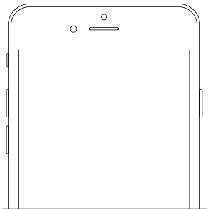

The ALA mobile app provides a dedicated mobile experience to allow you to record sightings or find out about species in your area. Download on the App Store or get it on Google Play.
Work while you're on the move with the ALA mobile app
Get the app on iPhone or on Android

Record sightings on the go
Record a sighting on your phone / Contribute a sighting to the ALA
Explore on the go
Explore plants and animals that occur in your area